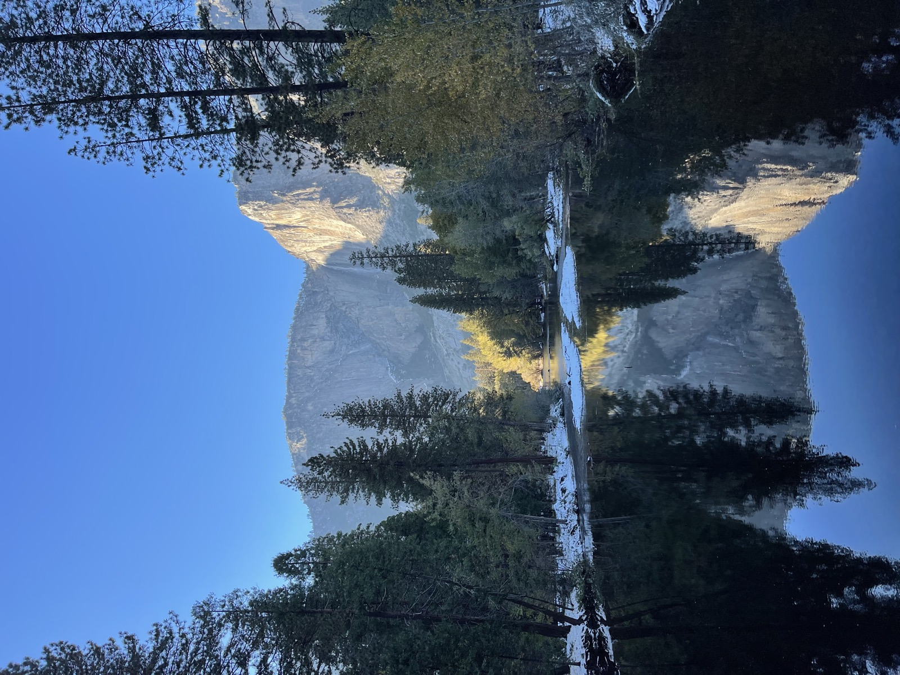

Now accepting applicationsWeek of January 25, 2027 · Yosemite National Park · By application
Journey into the Heart: From Darkness to Light
Three days in Yosemite to reboot, recalibrate and reconnect.
Winter in Yosemite is quiet: snow on granite, long nights, a park that's mostly empty. Fireside circles, shared meals, walks among the sequoias.